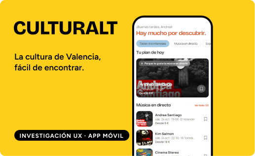
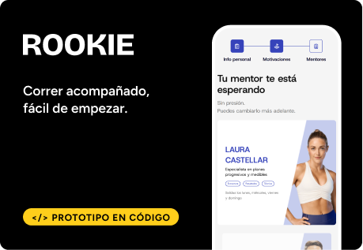
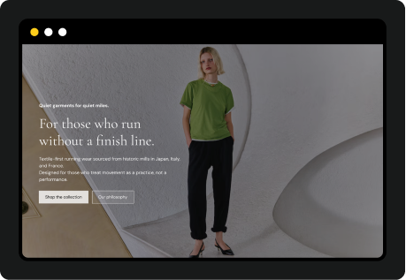

diseñadora ux/ui · ilustradora
“Escucho a las personas y cuento lo que descubro con imágenes.”
AHORA
Disponible ya para trabajo o prácticas. Convenio hasta el 31/12.
FORMACIÓN
Máster UX/UI · Digital Minds
BASE
Valencia o remoto
Descargar CV ↓
Diseñadora UX/UI con foco en research y nativa en IA. Vengo de la ilustración y de años de atención al cliente. Busco trabajo o prácticas en UX/UI.
CASOS · CADA UNO EN UN MINUTO

TFM · 7 SEMANAS · EQUIPO DE 4
La agenda cultural de Valencia está repartida en mil canales y la gente se entera tarde. Investigué, diseñé el flujo de descubrimiento e ilustré la app.
SUS en tests de usabilidad

CONCEPTO ACADÉMICO · 2 MESES · EQUIPO DE 3
El 80 % de quien empieza a correr lo deja antes de seis meses. Validé hipótesis con entrevistas y prototipé la app en código.
nos elegirían frente a la competencia

INDIVIDUAL · 8 SEMANAS
Una marca nueva necesitaba una home que la presentara y vendiera. Definí los pilares, armé el moodboard y publiqué la landing.
pilares que ordenan toda la home
LO QUE APORTO
Entrevistas, scorecards y tests de usabilidad. Saco insights de lo que la gente cuenta, no de lo que yo supongo.
Flujos, historias de usuario y prototipos, también en código. Del problema a algo que se puede probar.
Personalidad visual para un producto: estados vacíos, mascotas y microanimaciones que hacen la app más amable.
EXPERIENCIA
ATENCIÓN AL CLIENTE TELEFÓNICA
May 2026 – Actualidad
ILUSTRACIÓN DIGITAL · ENCARGOS Y PORTADAS
2024 – Actualidad
ATENCIÓN TELEFÓNICA Y BACKOFFICE · VÍA ASSIST CRM
2025 – Abr 2026
PROFESORA DE INGLÉS
Oct 2024 – Jun 2025
EMAIL, CHAT Y BACKOFFICE · VÍA ASSIST CRM
2023
AGENTE COMERCIAL
2022
FORMACIÓN
BARREIRA · DIGITAL MINDS
2025 – Oct 2026
UDIT · ESNE
2023 – 2024
LIGHTBOX ACADEMY
2021 – 2022
UNIVERSITAT POLITÈCNICA DE VALÈNCIA
2017 – 2021
IDIOMAS
Nativo
C1
B1
A2
HERRAMIENTAS
Figma
FigJam
Maze / tests moderados
HTML, CSS y JS
Cursor
Claude
Illustrator
Photoshop
After Effects
Procreate